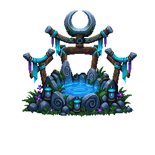

Moonwell DocumentationMoonwell guides
Getting Started
Install Moonwell, create a map from the template, and run it in Warcraft III.
Prerequisites
- .NET 10 SDK
- Warcraft III: Reforged 3.0.1
common.jandBlizzard.jinDocuments\Warcraft III\JassHelper
Installation
Install the project template and the command-line tool.
dotnet new install Moonwell.Templates
dotnet tool install --global Moonwell.CliCreate and run
Create a project, open its directory, and launch the map.
dotnet new moonwell -n MyMap
cd MyMap
moonwell run